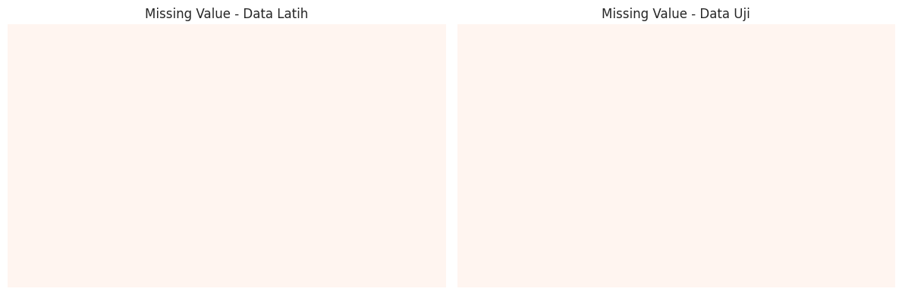
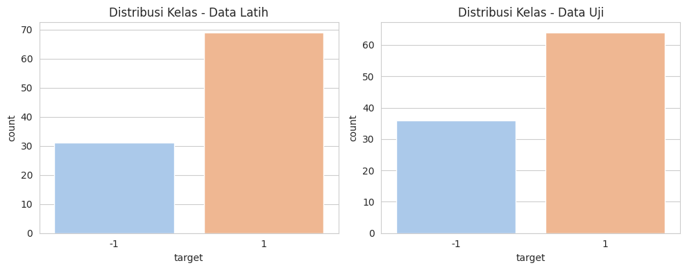
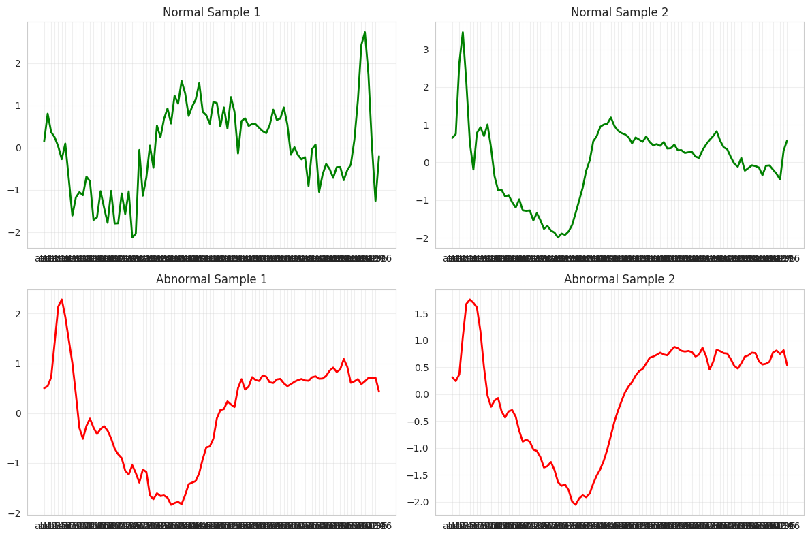
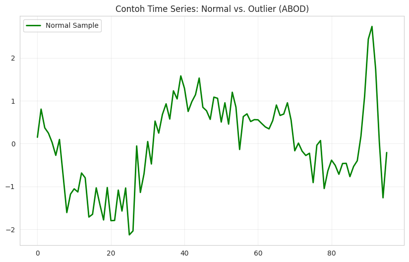

Data Understanding#
2.1 Sumber Data#
Dataset ECG200 diambil dari repositori Time Series Classification, yang menyediakan kumpulan data time series untuk keperluan benchmarking klasifikasi. Meskipun halaman saat ini mengalami kendala tampilan (menampilkan “No matching records found”), dataset ECG200 tetap tersedia secara publik melalui arsip UCR/UEA dan telah digunakan secara luas dalam literatur time series classification.
Asal dan Cara Pengambilan Data#
Asal data: Dataset ini diformat oleh R. Olszewski sebagai bagian dari tesis doktoralnya di Carnegie Mellon University tahun 2001.
Sumber sinyal: Setiap sampel mewakili satu denyut jantung, direkam dari aktivitas listrik jantung pasien menggunakan sistem perekaman ECG klinis.
Alat yang digunakan: Rekaman ECG diperoleh menggunakan perangkat elektrokardiografi medis standar, yang terdiri dari:
Elektroda permukaan yang ditempelkan pada dada dan anggota tubuh pasien,
Amplifier sinyal untuk memperkuat sinyal bioelektrik yang lemah,
Analog-to-Digital Converter (ADC) untuk mengubah sinyal analog menjadi data digital berupa deret waktu.
Proses pengambilan:
Sinyal ECG mentah direkam selama sesi klinis,
Segmen yang merepresentasikan satu siklus denyut jantung lengkap dipilih secara manual oleh ahli,
Segmen tersebut kemudian dipotong, dinormalisasi, dan diberi label berdasarkan diagnosis klinis pasien.
Waktu pengambilan asli: Data dikumpulkan sebelum atau selama penelitian tesis (sekitar awal 2000-an).
Format data: Disimpan dalam format ARFF (Attribute-Relation File Format), sesuai standar WEKA.
Preprocessing oleh penyedia:
Setiap sampel mewakili satu denyut jantung, dengan panjang tetap 96 titik waktu.
Dinormalisasi secara global.
Label:
1(normal heartbeat) dan-1(Myocardial Infarction / Ischemia).
Komposisi Dataset#
Data latih: 100 sampel
Data uji: 100 sampel
Jumlah fitur per sampel: 96 (time steps)
Jumlah kelas: 2 (normal vs. infark miokard)
Dimensi: Univariat (1 dimensi)
2.2 Eksplorasi Data#
2.2.1 Import Library dan Muat Data#
import pandas as pd
import numpy as np
from scipy.io import arff
import matplotlib.pyplot as plt
import seaborn as sns
sns.set_style("whitegrid")
sns.set_palette("Set2")
train_path = 'ECG200/ECG200_TRAIN.arff'
test_path = 'ECG200/ECG200_TEST.arff'
data_train, _ = arff.loadarff(train_path)
data_test, _ = arff.loadarff(test_path)
df_train = pd.DataFrame(data_train)
df_test = pd.DataFrame(data_test)
df_train['target'] = df_train['target'].apply(lambda x: int(x.decode('utf-8')))
df_test['target'] = df_test['target'].apply(lambda x: int(x.decode('utf-8')))
print("✅ Data berhasil dimuat dan label telah dikonversi ke integer.")
✅ Data berhasil dimuat dan label telah dikonversi ke integer.
2.2.2 Struktur Kolom dan Informasi Dataset#
print("=== Struktur Kolom ===")
print(df_train.columns.tolist())
print("\n=== Informasi Dataset Latih ===")
df_train.info()
print("\n=== Statistik Deskriptif ===")
df_train.describe().T.head(10)
=== Struktur Kolom ===
['att1', 'att2', 'att3', 'att4', 'att5', 'att6', 'att7', 'att8', 'att9', 'att10', 'att11', 'att12', 'att13', 'att14', 'att15', 'att16', 'att17', 'att18', 'att19', 'att20', 'att21', 'att22', 'att23', 'att24', 'att25', 'att26', 'att27', 'att28', 'att29', 'att30', 'att31', 'att32', 'att33', 'att34', 'att35', 'att36', 'att37', 'att38', 'att39', 'att40', 'att41', 'att42', 'att43', 'att44', 'att45', 'att46', 'att47', 'att48', 'att49', 'att50', 'att51', 'att52', 'att53', 'att54', 'att55', 'att56', 'att57', 'att58', 'att59', 'att60', 'att61', 'att62', 'att63', 'att64', 'att65', 'att66', 'att67', 'att68', 'att69', 'att70', 'att71', 'att72', 'att73', 'att74', 'att75', 'att76', 'att77', 'att78', 'att79', 'att80', 'att81', 'att82', 'att83', 'att84', 'att85', 'att86', 'att87', 'att88', 'att89', 'att90', 'att91', 'att92', 'att93', 'att94', 'att95', 'att96', 'target']
=== Informasi Dataset Latih ===
<class 'pandas.core.frame.DataFrame'>
RangeIndex: 100 entries, 0 to 99
Data columns (total 97 columns):
# Column Non-Null Count Dtype
--- ------ -------------- -----
0 att1 100 non-null float64
1 att2 100 non-null float64
2 att3 100 non-null float64
3 att4 100 non-null float64
4 att5 100 non-null float64
5 att6 100 non-null float64
6 att7 100 non-null float64
7 att8 100 non-null float64
8 att9 100 non-null float64
9 att10 100 non-null float64
10 att11 100 non-null float64
11 att12 100 non-null float64
12 att13 100 non-null float64
13 att14 100 non-null float64
14 att15 100 non-null float64
15 att16 100 non-null float64
16 att17 100 non-null float64
17 att18 100 non-null float64
18 att19 100 non-null float64
19 att20 100 non-null float64
20 att21 100 non-null float64
21 att22 100 non-null float64
22 att23 100 non-null float64
23 att24 100 non-null float64
24 att25 100 non-null float64
25 att26 100 non-null float64
26 att27 100 non-null float64
27 att28 100 non-null float64
28 att29 100 non-null float64
29 att30 100 non-null float64
30 att31 100 non-null float64
31 att32 100 non-null float64
32 att33 100 non-null float64
33 att34 100 non-null float64
34 att35 100 non-null float64
35 att36 100 non-null float64
36 att37 100 non-null float64
37 att38 100 non-null float64
38 att39 100 non-null float64
39 att40 100 non-null float64
40 att41 100 non-null float64
41 att42 100 non-null float64
42 att43 100 non-null float64
43 att44 100 non-null float64
44 att45 100 non-null float64
45 att46 100 non-null float64
46 att47 100 non-null float64
47 att48 100 non-null float64
48 att49 100 non-null float64
49 att50 100 non-null float64
50 att51 100 non-null float64
51 att52 100 non-null float64
52 att53 100 non-null float64
53 att54 100 non-null float64
54 att55 100 non-null float64
55 att56 100 non-null float64
56 att57 100 non-null float64
57 att58 100 non-null float64
58 att59 100 non-null float64
59 att60 100 non-null float64
60 att61 100 non-null float64
61 att62 100 non-null float64
62 att63 100 non-null float64
63 att64 100 non-null float64
64 att65 100 non-null float64
65 att66 100 non-null float64
66 att67 100 non-null float64
67 att68 100 non-null float64
68 att69 100 non-null float64
69 att70 100 non-null float64
70 att71 100 non-null float64
71 att72 100 non-null float64
72 att73 100 non-null float64
73 att74 100 non-null float64
74 att75 100 non-null float64
75 att76 100 non-null float64
76 att77 100 non-null float64
77 att78 100 non-null float64
78 att79 100 non-null float64
79 att80 100 non-null float64
80 att81 100 non-null float64
81 att82 100 non-null float64
82 att83 100 non-null float64
83 att84 100 non-null float64
84 att85 100 non-null float64
85 att86 100 non-null float64
86 att87 100 non-null float64
87 att88 100 non-null float64
88 att89 100 non-null float64
89 att90 100 non-null float64
90 att91 100 non-null float64
91 att92 100 non-null float64
92 att93 100 non-null float64
93 att94 100 non-null float64
94 att95 100 non-null float64
95 att96 100 non-null float64
96 target 100 non-null int64
dtypes: float64(96), int64(1)
memory usage: 75.9 KB
=== Statistik Deskriptif ===
| count | mean | std | min | 25% | 50% | 75% | max | |
|---|---|---|---|---|---|---|---|---|
| att1 | 100.0 | 0.708438 | 0.593513 | -0.706305 | 0.318643 | 0.581008 | 0.994760 | 2.689017 |
| att2 | 100.0 | 1.422151 | 0.927972 | -1.100715 | 0.779810 | 1.232191 | 2.093703 | 3.535038 |
| att3 | 100.0 | 2.039149 | 1.046880 | -1.321589 | 1.525548 | 2.152552 | 2.707411 | 3.850263 |
| att4 | 100.0 | 2.126455 | 1.098754 | -1.076313 | 1.511639 | 2.234408 | 2.865394 | 4.199145 |
| att5 | 100.0 | 1.551616 | 0.954734 | -1.247922 | 0.966292 | 1.746861 | 2.163355 | 3.720899 |
| att6 | 100.0 | 0.762251 | 0.963111 | -1.482391 | 0.022470 | 0.574297 | 1.502335 | 3.026452 |
| att7 | 100.0 | 0.282647 | 1.096712 | -1.598712 | -0.603378 | 0.120230 | 1.226563 | 2.454195 |
| att8 | 100.0 | 0.333630 | 0.877640 | -1.508060 | -0.464767 | 0.366122 | 1.008876 | 2.220327 |
| att9 | 100.0 | 0.372973 | 0.761753 | -1.609777 | -0.075355 | 0.457255 | 0.990675 | 2.122435 |
| att10 | 100.0 | 0.210769 | 0.739185 | -1.600454 | -0.205867 | 0.182365 | 0.776566 | 1.916524 |
2.2.3 Identifikasi Missing Value#
print("=== Jumlah Missing Value ===")
missing_train = df_train.isnull().sum()
missing_test = df_test.isnull().sum()
print("Data Latih:")
if missing_train.sum() == 0:
print("Tidak ada missing value.")
else:
print(missing_train[missing_train > 0])
print("\nData Uji:")
if missing_test.sum() == 0:
print("Tidak ada missing value.")
else:
print(missing_test[missing_test > 0])
fig, ax = plt.subplots(1, 2, figsize=(12, 4))
# Heatmap hanya menunjukkan keberadaan missing (True = putih/merah, False = putih)
sns.heatmap(df_train.isnull(), cbar=False, cmap='Reds', ax=ax[0], yticklabels=False, xticklabels=False)
ax[0].set_title('Missing Value - Data Latih', fontsize=12)
ax[0].set_facecolor('white')
sns.heatmap(df_test.isnull(), cbar=False, cmap='Reds', ax=ax[1], yticklabels=False, xticklabels=False)
ax[1].set_title('Missing Value - Data Uji', fontsize=12)
ax[1].set_facecolor('white')
fig.patch.set_facecolor('white')
for a in ax:
a.figure.set_facecolor('white')
plt.tight_layout()
plt.show()
=== Jumlah Missing Value ===
Data Latih:
Tidak ada missing value.
Data Uji:
Tidak ada missing value.

2.2.4 Distribusi Kelas#
print("=== Distribusi Kelas ===")
print("Data Latih:")
print(df_train['target'].value_counts().sort_index())
print("\nData Uji:")
print(df_test['target'].value_counts().sort_index())
fig, ax = plt.subplots(1, 2, figsize=(10, 4))
sns.countplot(data=df_train, x='target', ax=ax[0], palette='pastel')
ax[0].set_title('Distribusi Kelas - Data Latih')
sns.countplot(data=df_test, x='target', ax=ax[1], palette='pastel')
ax[1].set_title('Distribusi Kelas - Data Uji')
plt.tight_layout()
plt.show()
=== Distribusi Kelas ===
Data Latih:
target
-1 31
1 69
Name: count, dtype: int64
Data Uji:
target
-1 36
1 64
Name: count, dtype: int64
/tmp/ipykernel_17518/1495402320.py:12: FutureWarning:
Passing `palette` without assigning `hue` is deprecated and will be removed in v0.14.0. Assign the `x` variable to `hue` and set `legend=False` for the same effect.
sns.countplot(data=df_train, x='target', ax=ax[0], palette='pastel')
/tmp/ipykernel_17518/1495402320.py:15: FutureWarning:
Passing `palette` without assigning `hue` is deprecated and will be removed in v0.14.0. Assign the `x` variable to `hue` and set `legend=False` for the same effect.
sns.countplot(data=df_test, x='target', ax=ax[1], palette='pastel')

2.2.5 Visualisasi Time Series Contoh Per Kelas#
print("Jumlah sampel normal:", len(df_train[df_train['target'] == 1]))
print("Jumlah sampel abnormal:", len(df_train[df_train['target'] == -1]))
if len(df_train[df_train['target'] == 1]) == 0 or len(df_train[df_train['target'] == -1]) == 0:
print("⚠️ Peringatan: Tidak ada data ditemukan untuk salah satu kelas!")
else:
fig, axes = plt.subplots(2, 2, figsize=(12, 8))
axes = axes.flatten()
sample_normal = df_train[df_train['target'] == 1].iloc[:2]
sample_abnormal = df_train[df_train['target'] == -1].iloc[:2]
for i, row in enumerate(sample_normal.iterrows()):
idx, data = row
axes[i].plot(data[:-1], color='green', linewidth=2)
axes[i].set_title(f'Normal Sample {i+1}')
axes[i].grid(True, alpha=0.3)
for i, row in enumerate(sample_abnormal.iterrows()):
idx, data = row
axes[i+2].plot(data[:-1], color='red', linewidth=2)
axes[i+2].set_title(f'Abnormal Sample {i+1}')
axes[i+2].grid(True, alpha=0.3)
plt.tight_layout()
plt.show()
Jumlah sampel normal: 69
Jumlah sampel abnormal: 31

2.2.6 Deteksi Outlier Menggunakan ABOD (Angle-Based Outlier Detection)#
from pyod.models.abod import ABOD
df_combined = pd.concat([df_train, df_test], ignore_index=True)
X = df_combined.iloc[:, :-1].values
y = df_combined['target'].values
abod = ABOD(contamination=0.05)
outlier_labels = abod.fit_predict(X)
df_combined['outlier'] = outlier_labels
n_outliers = (outlier_labels == -1).sum()
print(f"🔍 Jumlah outlier terdeteksi: {n_outliers} dari {len(df_combined)} sampel")
fig, ax = plt.subplots(figsize=(10, 6))
normal_sample = df_combined[df_combined['outlier'] == 1].iloc[0, :-2].values
ax.plot(normal_sample, color='green', label='Normal Sample', linewidth=2)
if n_outliers > 0:
outlier_sample = df_combined[df_combined['outlier'] == -1].iloc[0, :-2].values
ax.plot(outlier_sample, color='red', label='Detected Outlier', linewidth=2, linestyle='--')
else:
print("⚠️ Tidak ada outlier terdeteksi — hanya menampilkan sampel normal.")
ax.set_title('Contoh Time Series: Normal vs. Outlier (ABOD)')
ax.legend()
ax.grid(True, alpha=0.3)
plt.show()
/usr/local/python/3.12.1/lib/python3.12/site-packages/sklearn/utils/deprecation.py:87: FutureWarning: Function fit_predict is deprecated
warnings.warn(msg, category=FutureWarning)
🔍 Jumlah outlier terdeteksi: 0 dari 200 sampel
⚠️ Tidak ada outlier terdeteksi — hanya menampilkan sampel normal.

2.3 Relevansi terhadap Tujuan Analisis#
Dataset ini relevan karena:
Mewakili masalah nyata: Deteksi infark miokard dari sinyal ECG merupakan aplikasi klinis penting dalam diagnosis jantung.
Ukuran kecil namun representatif: Cocok untuk eksperimen awal dalam klasifikasi time series tanpa memerlukan sumber daya besar.
Struktur sederhana: Data univariat dan panjang tetap mempermudah implementasi model (misalnya: Random Forest, 1D-CNN, atau ekstraksi fitur statistik).
Siap untuk demonstrasi: Format dan ukuran dataset memungkinkan integrasi ke dalam aplikasi berbasis Streamlit sebagai demo prediksi real-time atau batch.